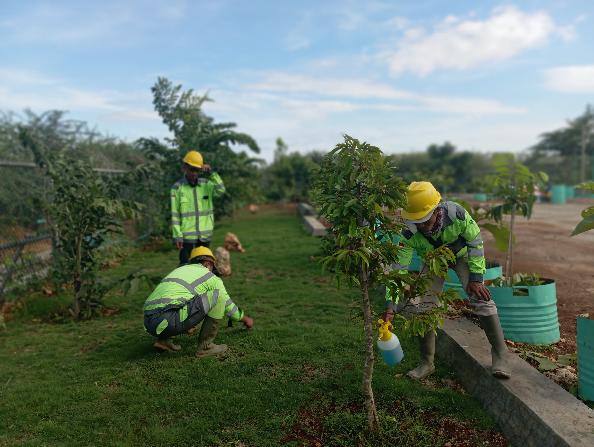
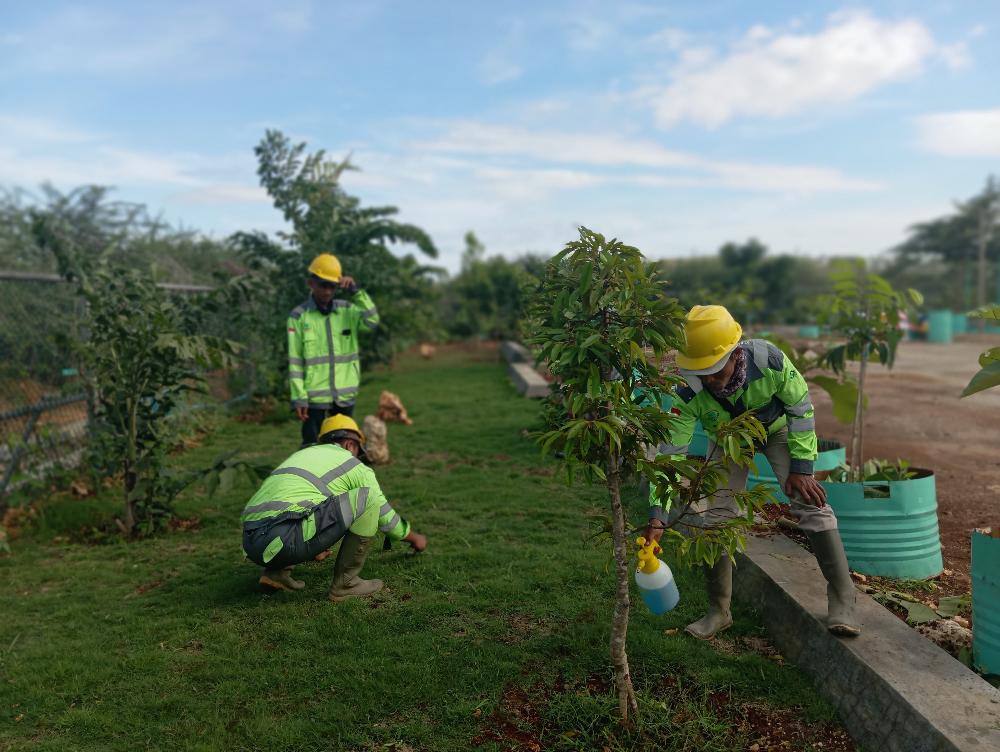

Sejarah
PT. KARYA MANDIRI CAKRA BUANA didirikan pada tahun 2014 sebagai perusahaan berbadan hukum Perseroan Terbatas (PT) dengan Akta Notaris No. Anti-41560.40.10.2014. Perusahaan ini berdomisili di Desa Socorejo, Kecamatan Jenu, Kabupaten Tuban, Jawa Timur.
Sejak awal berdirinya, PT. KARYA MANDIRI CAKRA BUANA telah berkomitmen untuk memberikan solusi terbaik dalam bidang konstruksi dan pertambangan. Sebagai anggota Asosiasi Kontraktor Nasional (ASKONAS), perusahaan ini menjunjung tinggi standar profesionalisme dan kualitas dalam setiap proyek yang dijalankan.
Dengan pengalaman dan reputasi yang solid di industri, PT. KARYA MANDIRI CAKRA BUANA telah dipercaya dalam berbagai proyek strategis, baik di sektor swasta maupun pemerintahan. Didukung oleh tim profesional dan penggunaan teknologi konstruksi terkini, perusahaan ini terus berinovasi untuk memenuhi kebutuhan klien dengan hasil yang maksimal.
Komitmen terhadap kualitas, integritas, serta kepuasan pelanggan menjadi prinsip utama dalam menjalankan setiap proyek. PT. KARYA MANDIRI CAKRA BUANA percaya bahwa konstruksi bukan hanya tentang membangun fisik, tetapi juga menciptakan nilai jangka panjang bagi masyarakat dan lingkungan.

 

PT. KARYA MANDIRI CAKRA BUANA adalah perusahaan konstruksi yang berbasis di Kabupaten Tuban, Jawa Timur. Sebagai anggota dari Asosiasi Kontraktor Nasional (ASKONAS), kami berkomitmen untuk memberikan solusi terbaik bagi kebutuhan konstruksi dan pertambangan dengan standar mutu tinggi, profesionalisme, juga integritas.
Website ini dirancang untuk menampilkan profil lengkap perusahaan, informasi layanan, portofolio proyek, serta kontak resmi untuk kebutuhan kemitraan. Melalui platform ini, pengunjung dapat mengenal lebih dalam tentang sejarah perusahaan, budaya kerja, spesialisasi proyek (seperti konstruksi gedung industri, saluran air, jalan raya, dan infrastruktur besar lainnya), serta keunggulan kompetitif kami dalam bidang konstruksi nasional.
Dengan mengusung tagline “Memberikan solusi terbaik untuk kebutuhan pertambangan Anda,” website ini juga menjadi sarana komunikasi antara PT. KARYA MANDIRI CAKRA BUANA dan klien potensial dari berbagai sektor industri maupun pemerintah, sekaligus memperkuat posisi kami sebagai mitra terpercaya dalam pembangunan infrastruktur Indonesia.
Mengapa Memilih Kami?
- Pengalaman Luas & Teruji Telah dipercaya dalam berbagai proyek strategis di berbagai daerah, termasuk kerja sama dengan pemerintah dan sektor swasta.
- Tim Profesional & Teknologi Mutakhir Didukung oleh tenaga ahli dan penggunaan teknologi konstruksi terkini untuk hasil yang maksimal.
- Kualitas, Keamanan, & Keberlanjutan Tiga prinsip utama kami dalam menjalankan setiap proyek dengan penuh tanggung jawab.
- Komitmen Kami Kami percaya bahwa konstruksi bukan hanya soal membangun fisik, tapi juga tentang menciptakan nilai jangka panjang. Karena itu, kami selalu mengedepankan kualitas, integritas, serta kepuasan pelanggan dalam setiap langkah pekerjaan kami.
- Hubungi Kami Tertarik bekerja sama atau ingin mengetahui lebih lanjut tentang layanan kami?